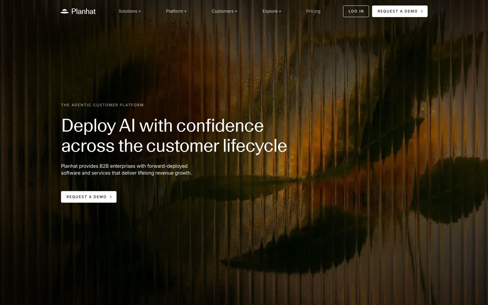

Planhat 的 Design.md 主题展示，围绕B2B 产品、企业服务、浅色界面、SaaS 产品组织页面。
Explore Planhat's light SaaS design system: Twilight Ink #000000, Canvas White #ffffff colors, Geigy LL Duplex Var Variable Reg, Inter typography, and...

#121211: #121211#000000: #000000#ffffff: #ffffff#575551: #575551#958d7e: #958d7e#22c55e: #22c55e#f6f6f8: #f6f6f8#1a1a1a: #1a1a1a#666666: #666666#999999: #999999#f2f2f2: #f2f2f2#0c0a09: #0c0a09display: Interbody: Intermono: ui-monospacehints: Inter,ui-monospace